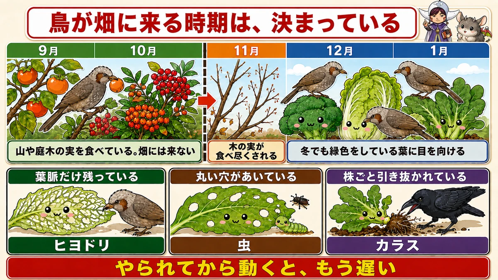
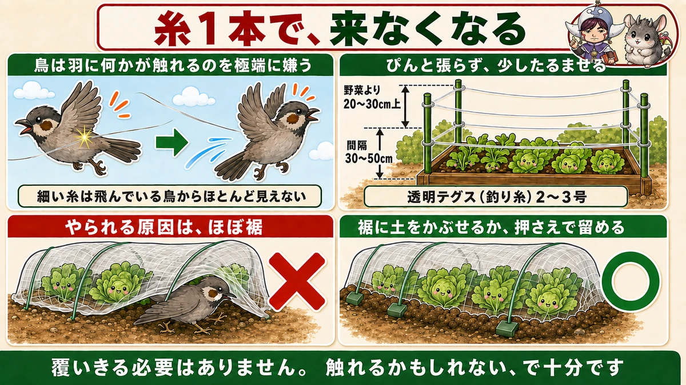
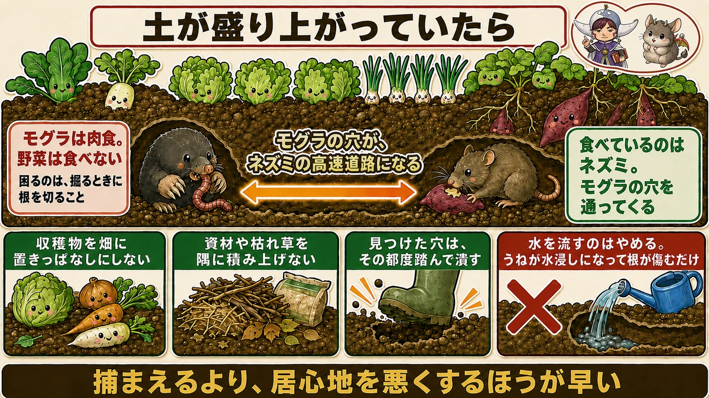

Birds arrive the week the wild berries run out 🐦 And one thread of line keeps them off

🐦 "My broccoli was fine and overnight it was just stalks."
🐦 "It was under netting and they got it anyway."
🐦 "There are holes in the plot and the soil is pushed up."
Hello, I'm Eiko. Eight years of growing vegetables organically and without pesticides, and a teaching licence in science.
The headline:
Birds arrive suddenly, in late autumn.
Through summer and early autumn there's almost no bird damage. Then, from one week, the broccoli and cabbage start being stripped.
The reason is clear: that's when the berries in the hills are finished.
Why that week

What this diagram says （図解の文字）
- The time birds come to the plot is fixed
- September / October — "eating berries in the hills and gardens. They don't come to the plot"
- November — "the berries are eaten out"
- December / January — "they turn to leaves that are still green in winter"
Birds have an order of preference. Through autumn they eat berries in the hills and gardens — sweet and nutritious things first.
Those are eaten out over a few weeks in late autumn, and then they look at whatever is still green in winter. Which is your vegetables.
So it arrives like clockwork
Bird damage starts at almost the same time every year. In my plot it's the middle of November: nothing at all, and then they're there every morning.
Knowing it's about to start is enough to be ready. Reacting after the damage is too late.
The worst is later still
Late autumn is only the start. The heaviest damage is from the turn of the year into early spring, when the birds' food has genuinely run out and the plot becomes the obvious feeding ground.
And there's one clear peak: the morning after snow.
Snow cover stops them feeding on the ground, so they concentrate on whatever leaves stand above it. A plant stripped bare overnight is usually this.
- Mid-late autumn — they start. Put your defences up now
- Deep winter — the peak
- The morning after snow — the most dangerous of all
When snow is forecast, check the netting and lines before it falls — afterwards you can't get into the plot.
Knowing the culprit
The usual offender where I am is the bulbul — grey, a little larger than a starling, with a brown patch on the cheek and a loud call. They come in groups of five to fifteen, and one finding food brings the rest.
Reassuringly, small birds like sparrows do almost no damage. A small bird in the plot can be left alone. What to watch for is bulbuls, starlings, crows and pigeons.
Crows are in a different class
Crows are cleverer by an order of magnitude.
Tomatoes and sweetcorn get taken on the exact day you were going to pick them. Not coincidence — they watch it ripen.
Same with peanuts: they see the leaf colour change at harvest time and work inward from the edges of the plot, so you notice late.
And they learn. Any single deterrent will eventually be filed under "harmless". So with crows, never rely on one thing.
The damage tells you who
- Leaves torn away leaving only the thick veins — bulbul
- Round holes in the leaves — insects
- Whole plants pulled up and strewn about — crow
A bulbul strips only the soft tissue, so the veins remain. See that and it's near enough certain.
One strand of line does most of the work

What this diagram says （図解の文字）
- One line and they stop coming
- "Birds intensely dislike anything touching their wings"
- "Fine line is almost invisible to a bird in flight"
- "Don't pull it tight — leave a little slack" ／ "20–30 cm above the crop" ／ "30–50 cm spacing"
Why line works
A bird intensely dislikes anything touching its wings — being unable to fly is a matter of life and death.
And fine line is almost invisible to a bird in flight. Something invisible touching its wings is the worst situation a bird can be in.
So line alone stops them. You don't have to cover everything with netting.
How to set it
- Clear monofilament fishing line, a fairly fine grade
- 20–30 cm (8–12 in) above the crop
- 30–50 cm (12–20 in) apart — it doesn't need to be dense
- A cane at each corner, line run between them
Leave it slightly slack rather than taut — it moves in the wind and they dislike it more.
One common error: thick line that you can clearly see works less well. The mechanism is "invisible, therefore frightening", so the harder it is for you to see, the better.
To protect one plant, wind it upward
Running line over the bed protects the whole bed. To defend one particular plant, enclose it:
- Four 150 cm (5 ft) canes around the plant
- Wind the line up in a spiral — about 10 cm (4 in) apart this time
- Tie it off at each cane so it can't slip
- Cross two strips of bird tape over the top so they can't come in from above
30–50 cm for running across, 10 cm for winding round. The numbers differ because you're now stopping entry from the sides as well.
Keep the canes away from the plant
A mistake common to both line and netting: putting the canes right next to the plant.
Too close and a crow ducks under the line to feed; with netting, leaves poke out and give it a foothold.
Set the canes about 40 cm (16 in) away. For peanuts I run line at three heights — 30 cm, waist and eye level — and cross it inside as well.
And set it up early: a month before harvest, not just before. Crows start coming as soon as the colour changes.
When netting is the surer option
For things you really want to keep — broccoli, Chinese cabbage — simply leaving insect netting on is the reliable answer.
What matters is the hem. A lifted hem means they come in underneath. Bury it in soil or peg it down.
"It was netted and they still got it" is nearly always the hem. Even slightly lifted is enough — a crow puts its head in and eats whatever it can reach.
The other frequent cause: leaves poking out through the netting. Birds perch there and use the leaf as a way in — you thought you were protecting it and you built an entrance.
On mesh size: a coarse net may stop bulbuls and starlings but is useless against crows. Fine insect netting is the safer choice — and against birds you don't need to think about mesh at all, since the only aim is to keep them out. Whatever netting you have will do.
Four ways to put it over
- Four canes, lantern style — the basic method
- Three canes crossed at the top, tripod style — easier than four, and what I mostly use
- One cane at the base, wrapped round like a Christmas tree — for small plants
- Wrapped vertically and gathered at the top with string — for tall plants
A tripod takes three 150 cm canes, two pegs and three or four clothes pegs — four pegs reduces the flapping.
Mistakes when netting
- Canes not pushed in firmly — the netting catches the wind and it's worse than nothing. Plants found flat after a storm are usually this
- Do it on a still day. In wind the netting gets away from you
- Stand up any wind-flattened plants with a cane and twine before netting — worth doing even if you don't net
- Don't enclose them in plastic. Even in winter it gets far too hot inside. Insect netting is about right
If you can't manage line or netting
Wide beds, not enough canes, no time. If you do one thing, use wood vinegar.
Dilute about 1:50 and sprinkle a little between the beds — not on the vegetables. When tomatoes of mine were being taken two and three days running, this stopped it dead. They dislike the smell.
But crows learn. The same trick stops working eventually, so rotate smell, light and sound. Again: don't rely on one thing.
If the soil is pushed up

What this diagram says （図解の文字）
- When the soil is raised
- "Moles are carnivores. They don't eat vegetables"
- "The problem is roots cut while they dig"
- "A mole's tunnel becomes a motorway for mice" — "what's eating things is the mice"
Moles and mice are two different problems
A long ridge of raised soil means a mole. But moles don't eat vegetables — they eat worms and insects. They're carnivores.
The problem is that they cut roots while tunnelling, so a plant suddenly loses vigour.
What's actually eating things is mice
Mice use the mole's tunnels. They're herbivores — sweet potatoes, potatoes, legumes — and the tunnels act as a motorway into the middle of the plot.
So most "mole damage" is moles and mice combined.
What you can do
- Don't leave harvested produce lying in the plot
- Don't pile materials or dead grass in a corner — it becomes a nest
- Tread in any hole you find, each time
Reducing food and shelter works best. Making the place uncomfortable is quicker than trying to catch anything.
Larger animals
Palm civets, raccoon dogs, wild boar. These come in summer and autumn, not winter.
- Sweetcorn — once pollination is done and the cobs are filling
- Sweet potatoes — as the tubers fatten
- Autumn potatoes and taro — as they sweeten
You don't need to fence the whole plot. Fence the bed that's being raided. 150 cm canes either side of the bed and animal netting.
1 m to 1.2 m (3–4 ft) is enough that they can't jump in.
But the height isn't the point: they come in from below, not over the top.
Pin the hem down with U-pins and cover it with soil. Do that and they essentially can't get in. Every failure I've seen was a hem prised open in one place.
- Push corrugated sheet or pins in around the bed so they can't dig
- Be extra careful near a ditch, a river or rough grass — they lie up there by day
- Don't leave produce in the plot
- Fence immediately after the first raid. Left alone, they learn the taste and come back
To sum up
- ✅ Birds arrive when the wild berries run out — almost the same week every year
- ✅ The peak is deep winter, and the morning after snow
- ✅ Check everything before snow falls
- ✅ Small birds do little damage. Watch bulbuls, starlings, crows and pigeons
- ✅ Crows watch things ripen — and they learn. Never use one deterrent
- ✅ Veins left = bulbul; round holes = insects; plants pulled up = crow
- ✅ Fine line, 20–30 cm above the crop, 30–50 cm apart, slightly slack
- ✅ To protect one plant, wind it in a spiral 10 cm apart
- ✅ Keep canes about 40 cm from the plant, and set up a month early
- ✅ With netting, the hem is everything — and keep leaves from poking out
- ✅ Use the summer netting; leave it on as a windbreak
- ✅ No time? Wood vinegar at 1:50 between the beds
- ✅ Moles don't eat vegetables; mice use their tunnels
- ✅ Larger animals come from below. Pin and bury the hem
You don't have to do all of it. Run one strand of line over the bed, 20 cm above the leaves. That alone changes most of it 🐦
Thank you for reading!